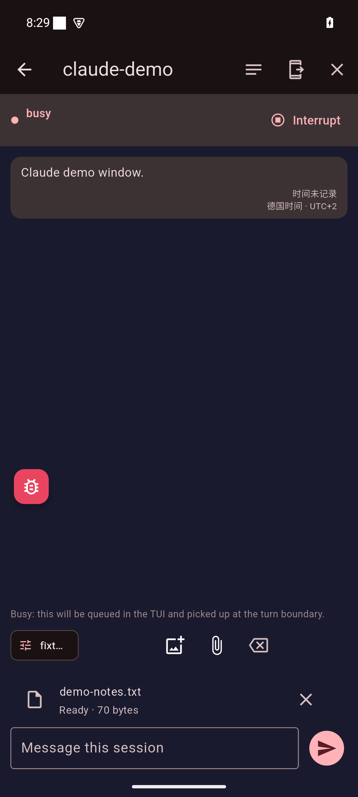
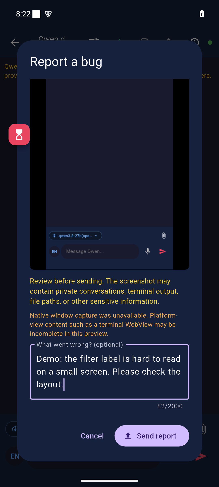

1
手机客户端

请给本客户端的Agent 筛选标签加横向滚动，先给候选补丁。
LAZY DOGGY / 从手机到服务器

请给本客户端的Agent 筛选标签加横向滚动，先给候选补丁。
校验身份、会话权限和输入边界。
独立工作区 · feature/ui
独立工作区 · feature/receipts
独立工作区 · feature/tests
Git worktree 和分支隔离修改；执行权限边界仍由容器／VM 与授权目录承担。

小屏幕标签难读，希望保留完整名称并支持滑动。
缩略图中的草稿已取消；本演示不提交报告。查看已验收版本 → 下载 → 系统确认
应用更新：已验收电脑另有单独确认的更新入口；本片不安装软件。客户端先保存原请求编号；这句要求只属于教学动画。
能力边界：反馈保存、应用更新已验收；一键全自动修复 worker 未验收。修复、构建、发布需授权。图中的任务、补丁和事件均为流程示意。